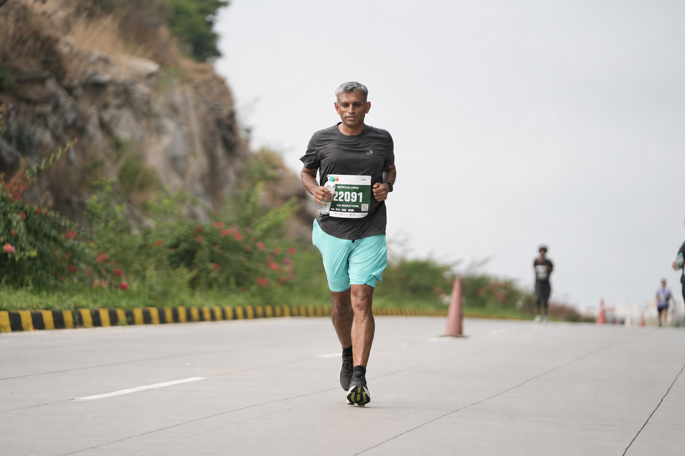

These rules govern how the training plan responds to Ananth's weekly body signals. They are applied before every new week is written — automatically, without negotiation.
| If this is observed | Then this happens |
|---|
The Malnad Ultra 100K is one of India's most demanding trail running events — 100 kilometres of mountain trail through the coffee estates and forests of Karnataka's Malnad region, gaining and losing 3,410 metres in elevation in a single continuous push lasting up to 21 hours.
The course runs as two identical 50-kilometre loops through dense forest, river crossings, and unrelenting climbs in the Western Ghats near Chikmagalur. The first loop must be completed by 4:30 PM; the second begins in the late afternoon and runs deep into the night under a mandatory headlamp. The cut-off is 3:30 AM the following morning.
Ananth is 47 and lives in North Bengaluru. He completed the Malnad 50K in November 2025, earning his qualification for the 100K. This 32-week campaign — three phases, five races — is the methodical preparation for what comes next.
At 47 the body is capable of extraordinary endurance performance, but it recovers on its own schedule and adapts more deliberately than it did at 30. The plan is built around that reality: Zone 2 aerobic discipline every Tuesday and Thursday, long runs every Saturday, one strength session mid-week, sleep protected as a training variable, and protein tracked like a metric. Every early morning, every held-back heart rate, every protein-rich meal is part of the same plan.
The only finishing time that matters for a first 100K is the one that says Finisher. Everything before November 28 is preparation.
Messages from friends, family, and fellow runners — visible to everyone, updated in real time. A long run at 5 AM is easier when you know people are cheering.